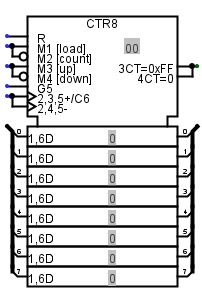
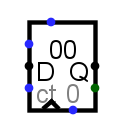

Counter
Counter
| Library: | Memory |  |
| Introduced: | 2.3.0 | |
| Appearance: |  |
Behavior
The counter holds a single value, whose value is emitted on the output Q. Each time the clock input (diagrammed with a triangle on the component's south edge) triggers according to its Trigger attribute, the value in the counter may update based on the two inputs on the component's west edge: The upper input is called load and the lower is called count, and they are interpreted as follows.
| load | count | trigger action |
| 0 or z | 0 | The counter remains unchanged. |
| 0 or z | 1 or z | The counter increments. |
| 1 | 0 | The counter loads the value found at the D input. |
| 1 | 1 or z | The counter decrements. |
The range of counting can be configured using the Maximum Value attribute. When the counter reaches this value, the next increment wraps the counter back to 0; and if it is at 0, then a decrement will wrap the counter around back to its maximum value.
In addition to the output Q, the component also includes a single-bit output carry. This is 1 whenever the counter is at its maximum and the load and count inputs indicate that the component should increment on the next step - or when the counter is at 0 and the load and count inputs indicate to decrement at the next step.
The clear input resets the counter's value to 0 (all zeroes) asynchronously; that is, as long as the clr input is 1, the value is pinned to 0, regardless of the clock input.
Pins
- East edge, labeled Q (output, bit width matches Data Bits attribute)
- Outputs the value currently stored by the counter.
- East edge, lower pin (output, bit width 1)
- Carry: When load and count indicate to increment, this output is 1 whenever the counter is at its maximum. When load and count indicate to decrement, this output is 1 whenever the counter is at 0. At all other times, this output is 0.
- West edge, top pin (input, bit width 1)
- Load: When this is 1 while the count input is 0, the counter will load the value found at the data input at the next clock trigger - or, if the count input happens to be 1, the counter's value will decrement.
- West edge, middle pin labeled D (input, bit with matches Data Bits attribute)
- Data: When the clock triggers while load is 1 and count is 0, the counter's value changes to the value found at this input.
- West edge, lower pin labeled ct (input, bit width 1)
- Count: When this is 1 or unconnected, the value in the counter increments whenever the clock input is triggered - or it decrements if the load input happens to also be 1.
- South edge, indicated with a triangle (input, bit width 1)
- Clock: At the instant that this is triggered as specified by the Trigger attribute, the counter updates as indicated by the load and count inputs.
- South edge, labeled 0 (input, bit width 1)
- Clear: When 0 or undefined, this input has no effect. As long as it is 1, the counter's value is asynchronously pinned to 0. This occurs asynchronously - that is, without regard to the current clock input value. As long as this is 1, the other inputs have no effect.
Logisim-evolution Appearance (IEEE/IEC Standard)
When the Appearance attribute is set to Logisim-evolution, the counter uses standard IEC/IEEE graphical symbols (IEC 617-12 and IEEE Std 91-1984). This appearance presents the same functionality with different symbolic notation:
| Symbol on Component | Corresponds to Classic Pin | Function | ||||||||||||||||||||||||
|---|---|---|---|---|---|---|---|---|---|---|---|---|---|---|---|---|---|---|---|---|---|---|---|---|---|---|
| G (shown as G5) | ct (Count Enable) |
| Symbol | Label | Function |
|---|---|---|
| G (or G5) | Count Enable | When high (1), counting is enabled. When low (0), the count is held regardless of clock pulses. |
| M1 | [load] | Load mode control. Activates loading from the Data input. |
| M2 | [count] | Count mode control. Activates counting operation. |
| M3 | [up] | Up-count control. Selects increment mode. |
| M4 | [down] | Down-count control. Selects decrement mode. |
| 2,3,5+/C6 | Clock+ | Clock input for specific mode combinations (with count enable active). |
| 2,4,5- | Clock- | Alternative clock input path for different operational modes. |
Note: The Logisim-evolution appearance may show duplicate clock and carry pins. These represent different operational modes of the counter according to the IEC/IEEE standard. The functionality is identical to the Classic appearance; only the graphical representation differs.
Note: The duplicate clock and carry symbols represent different activation conditions (e.g., counting up vs. down, loading vs. counting) as defined in the IEC/IEEE standards. They are electrically connected internally - only one functional clock and carry exist.
Attributes
When the component is selected or being added, Alt-0 through Alt-9 alter its Data Bits
attribute.
- Data Bits
- The bit width of the value emitted by the component.
- Maximum Value
- The maximum value, at which point the counter will set its carry output.
- Action On Overflow
-
The behavior when the counter attempts to increment beyond the maximum value or decrement beyond 0. Four
possible actions are supported:
- Wrap around
- The next value is 0 (if incrementing - the maximum value if decrementing)
- Stay at value
- The counter's value remains at the maximum (or 0 if decrementing)
- Continue counting
- The counter continues incrementing/decrementing, keeping the number of bits as provided by the Data Bits attribute
- Load next value
- The next value is loaded from the D input.
- Trigger
-
Configures how the clock input is interpreted. The value
rising edge
indicates that the counter should update its value at the instant when the clock rises from 0 to 1. Thefalling edge
value indicates that it should update at the instant the clock falls from 1 to 0. - Label
- The text within the label associated with the component.
- Label Font
- The font with which to render the label.
Poke Tool Behavior
Clicking the counter brings keyboard focus to the component (indicated by a red rectangle), and typing hexadecimal digits will change the value stored in the counter.
Text Tool Behavior
Allows the label associated with the component to be edited.